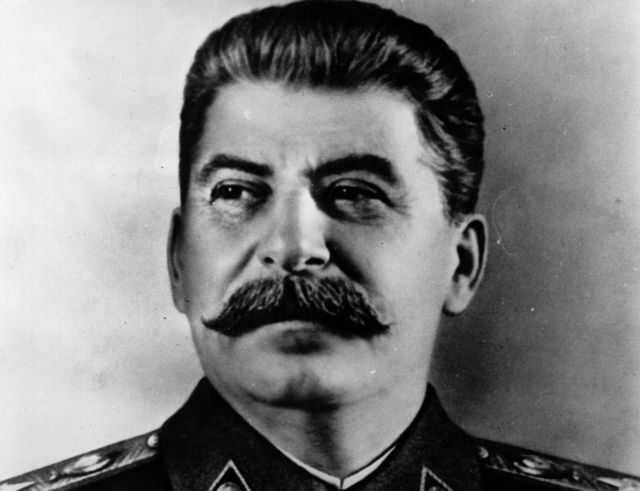
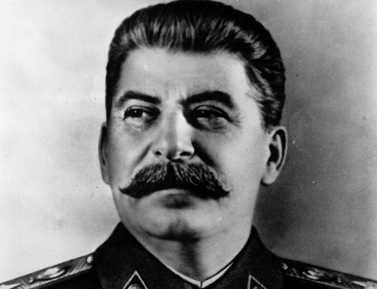
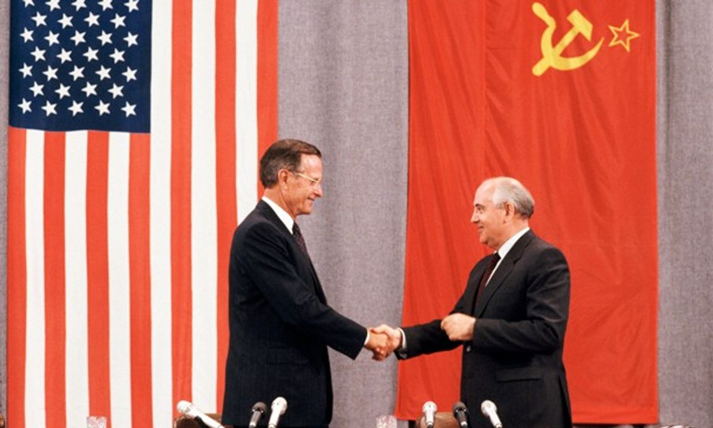
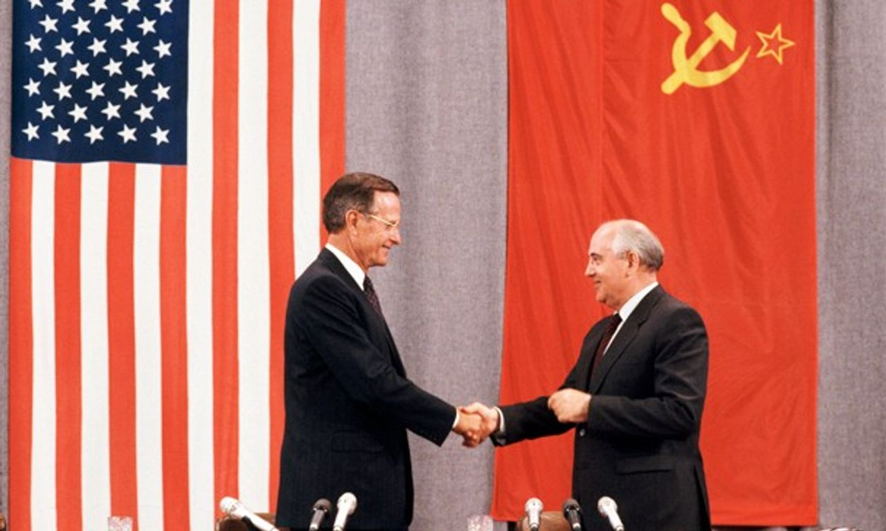

The political changes resulting from the Cold War were profound and extensive, shaping the global landscape for decades to come. End of Ideological blocs: Ideological differences between communism and capitalism determined political alliances, and countries aligned themselves based on their affiliation with the Western or Eastern bloc. Bipolar world order: The end of the Cold War led to the dissolution of the Soviet Union in 1991, heralding the emergence of a unipolar world order with the United States as the predominant superpower. This shift impacted diplomatic strategies, security arrangements, and the dynamics of international relations. Democratization and Transition in Eastern Europe: The fall of the Berlin Wall in 1989 and subsequent events led to the democratization of Eastern Europe. Former Soviet bloc countries transitioned to multiparty systems, adopting political and economic reforms.
 

 

The Cold War was an event that changed the world. This changed the map of Europe, the government systems of many countries, and the alliances between countries. This war started just after the WWII where the US and The USSR made their rivalry clear to the world. The disagreements were mainly because the United States was a country with a capitalist system, while the Soviet Union was a communist system, this caused a lot of tension between the two superpowers. The globe at the time was divided into east and west, The Berlin Wall was the one who divided it. In between 1989 and 1991, the Cold War came to an end, when the Soviet Union was taken down. This later changed the Soviet Union into new countries and the countries systems changing to capitalist.